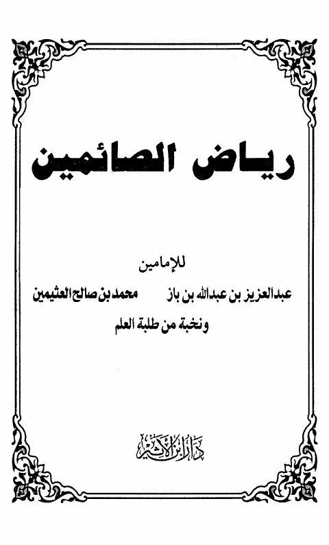

Downloads need an internet connection.
رياض الصائمين
Authors: عبد العزيز بن عبد الله بن باز محمد بن صالح العثيمين
Publishers: دار ابن الأثير
▫️ العنوان: رياض الصائمين ▪️ المؤلف: #عبد_العزيز_بن_عبد_الله_بن_باز • #محمد_بن_صالح_العثيمين ▫️ الناشر: #دار_ابن_الأثير ▪️ تاريخ النشر: 1426هـ 2005م ▫️ بلد النشر: الرياض، #السعودية ▪️ الطبعة: 1 ▫️ عدد الأجزاء: 1 ▪️ الصفحات: 80 ▫️ نوع الوعاء: #كتاب ▪️ التصنيف الرئيسي: #الزهد_والرقائق ۪